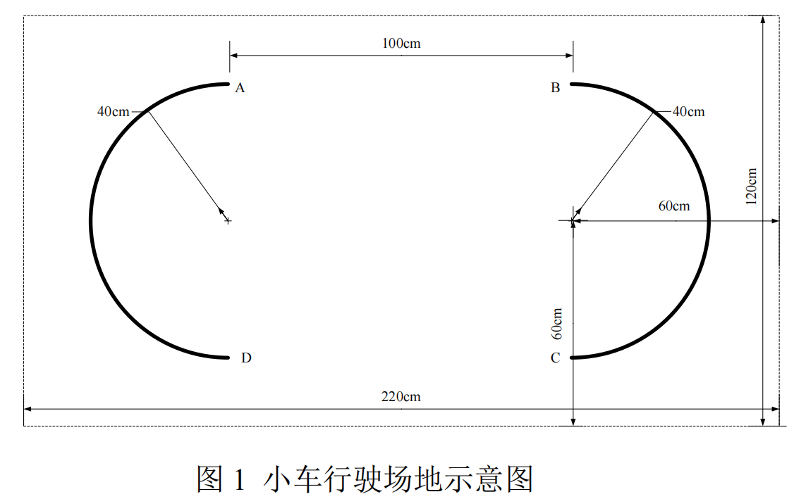
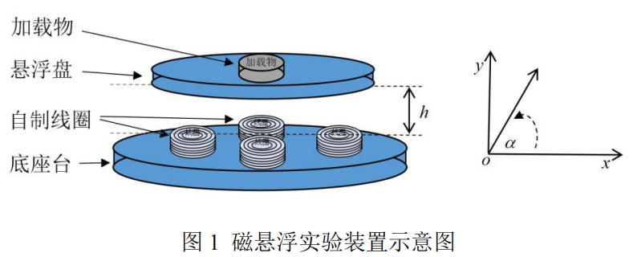
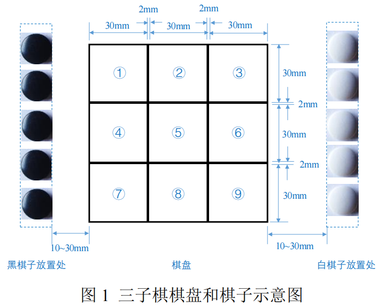
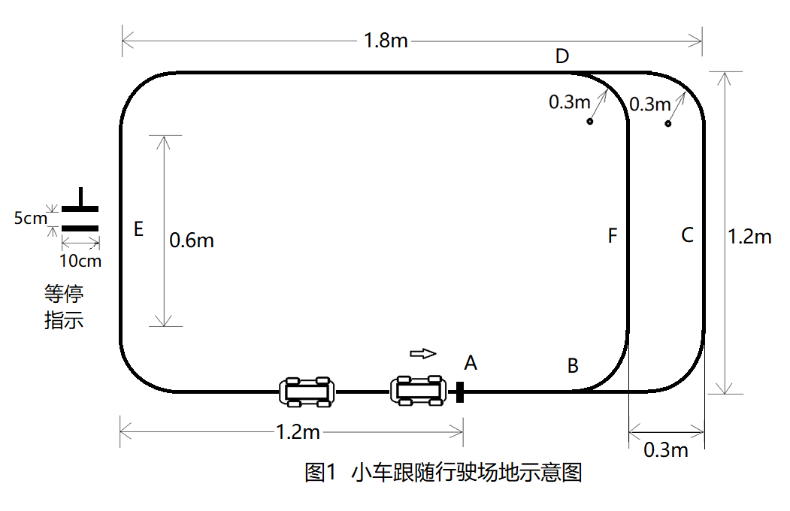
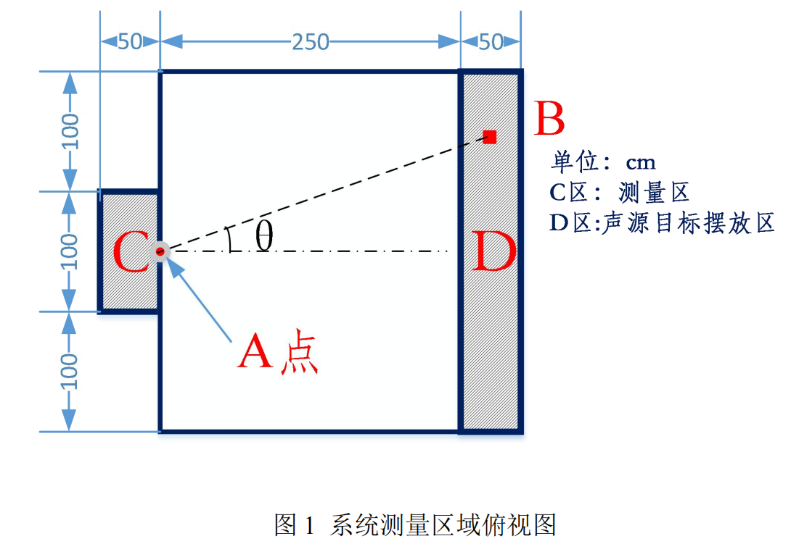
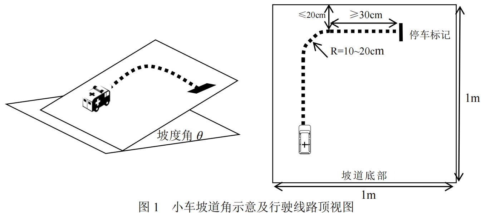
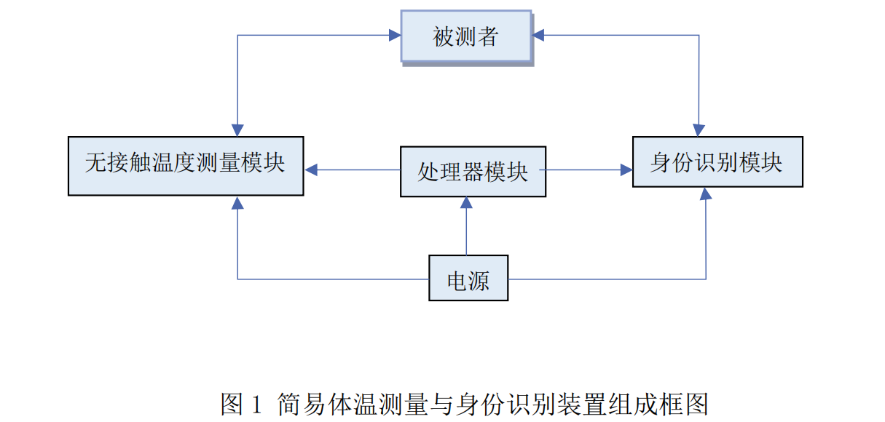
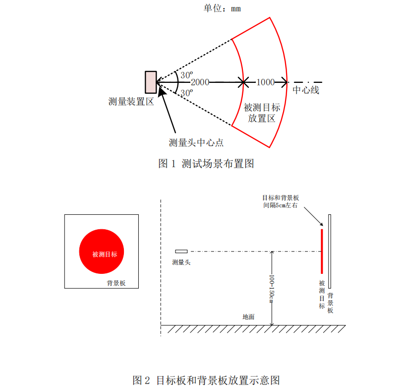
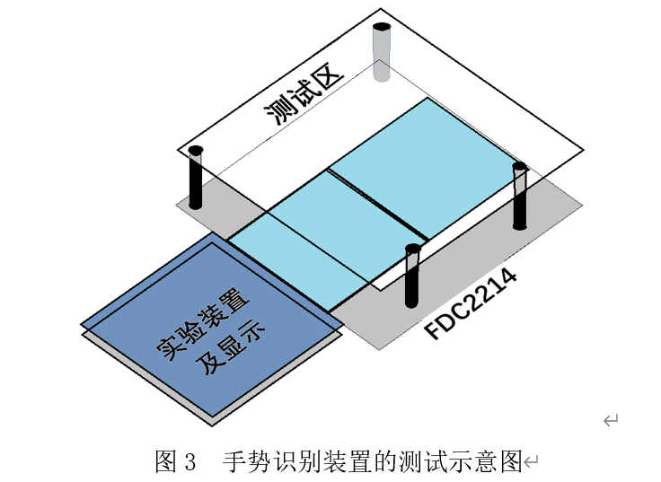

电赛省赛年 广义控制类试题总结
目录
注：目前的范围是2018、2020、2022三个偶数年。
2024年
H题：自动行驶小车
这道题属于小车题。

题目要求
- A→B，时间上限要求。
- A→B→C→D，时间上限要求。
- A→C→B→D，时间上限要求。
- 按3行驶4圈，越快越好。
题目说明
- 必须使用MSPM0系列芯片。
- 不可安装摄像头，不可借助外界导航。
- 小车投影必须覆盖弧线及其顶点。
F题：磁悬浮实验装置
这道题属于控制与电源略有结合的题目。

题目要求
- 悬浮盘在最小高度要求下稳定悬浮10秒以上。
- 稳定悬浮下在中心加20g物体，稳定悬浮10秒以上。
- 数字设定悬浮盘的悬浮高度。
- 底座和悬浮盘可整体手动倾斜，角度越大越好。
- 悬浮高度满足前提下，供电功率越小越好。
题目说明
- 使用多个电磁线圈构成的电磁铁实现。
- 通过直流电源供电。
- 验收过程中不可移动。
E题：三子棋游戏装置
这道题属于控制与视觉结合的题目。

题目要求
- 将棋子放置到指定方格中。
- 棋盘旋转后，将棋子放置到指定方格中。
- 执黑棋与人对弈，人第一步错误时机器可获胜。
- 人执黑棋，装置不输。
- 若人将下过的棋子变动位置，装置可发现并恢复。
题目说明
- 三子棋棋盘和棋子由选手自带。
- 装置应能适应正常室内照明环境。
- 放置一颗棋子的时间不大于 15s。
2022年
C题：小车跟随行驶系统
这道题属于小车题。

题目要求
- 领头小车固定速度外圈行驶，跟随小车按固定间距跟随。
- 领头小车置于A，跟随小车置于E。跟随小车快速追上，随后按固定距离跟随。
- E边放等停指示。领头小车遇指示停车5秒，随后行驶至A点。
- 领头小车与跟随小车轮流沿内-外圈行驶。
题目说明
- 行驶场地由选手自己制作，需要遵循相关要求。
- 领头小车上有启动按键和设置按键，而跟随小车只有一个上电开关。
- 在两个小车跟随行驶过程中，除了两个小车间的相互通信外，不得有车外遥控和其他通信指令辅助。
E题：声源定位跟踪系统
这道题属于控制与信号略有结合的题目。

题目要求
- 制作音量可调声音发生装置。
- 屏幕实时显示声源的距离和角度。误差越小越好。
- 控制激光笔指向声源。偏差越小越好。
- 声源移动动态追踪。反应时间越短越好。
题目说明
- 声源可以发出自定的规则声音。
- 声源可使用符合尺寸要求的微型有源音箱，播放事先录制的声音。
- 要求各个任务可以一键启动。
2020年
C题：坡道行驶电动小车
这道题属于小车题。

题目要求
- θ=0∘，可自动骑线行驶。投影不得脱离标记线。
- 可设定行驶时间，匀速通过1中线路。
- θ=10∘，完成2中任务。
- 指定 θ=11∘∼30∘，完成2中任务。
- 尽量增加 θ ，完成2中任务。
题目说明
- 必须使用MSP430/MSP432平台。
- 坡度角可以用安卓手机上的“指南针”APP 软件测量。
- 小车到达停车线的标记点自定。
F题：简易无接触温度测量与身份识别装置
这道题属于控制与仪器仪表结合的题目。

题目要求
- 非接触温度测量功能。
- 温度超标报警功能。报警阈值可设置。
- 身份识别功能。
- 被测人是否符合防疫要求（如佩戴口罩）判别功能。
- 现场被测人身份特征学习与身份识别功能，限制学习时间。
题目说明
- 不能采用市售产品，测试中不能借助网络资源。
- 学习对象为现场的工作人员，要求经过现场学习，能准确识别学习对象的身份。
G题：非接触物体尺寸形态测量
这道题属于控制与视觉结合的题目。

题目要求
- 规则形状的平面目标，测量边长、几何形状、目标与测量头距离。限制时间。
- 自动寻找目标，测量并显示距离、形状、尺寸、用激光笔指示几何中心，时间越短越好。
- 抽取篮球、排球、足球中一个，重复2中测量，判断球类品种、测量与球表面最近距离，限制时间。
题目说明
- 平面目标为形状圆、正三角形、正方形三种，直径或边长尺寸为30--40cm，颜色为红、绿、蓝纯色；立体目标为足球、篮球、排球，颜色和花色纹路等为自然取得。
- 测量过程中要求不得输入数据或用步进、电位器调节等方法改变参数，每次测量只可一键操作。
2018年
C题：无线充电电动小车
这道题属于小车题和电源结合的题目。
题目要求
- 制作一套无线充电装置，发射器采用具有恒流恒压模式自动切换的直流稳压电源供电，供电电压为5V。
- 作一个无线充电电动车。电动车使用适当容量超级电容（法拉电容）储能，经DC-DC变换给电动车供电。
- 充电1分钟结束后，小车自行启动，直线行驶直至能量耗尽。
- 充电1分钟结束后，小车沿木板斜坡爬坡行驶，倾斜角自定，尽量使爬升高度最大。
题目说明
- 建议采用TI公司TPS63020芯片。
- 路面倾斜角度θ可以采用具有角度测量功能APP（如“指南针”）的手机，平放在斜坡上测量。
D题：手势识别装置
这道题属于控制与仪器仪表略有结合的题目。

题目要求
- 判决手势“石头”、“剪刀”和“布”，限制时间。
- 判决手势“1”、“2”、“3”、“4”和“5”，限制时间。
- 在训练模式下，对任意测试者进行猜拳/数字的手势训练。然后切换到判决模式，对被训练的人员进行猜拳/数字判决。限制训练与判决时间。
题目说明
- 必须采用TI公司传感芯片FDC2214，要求所使用的FDC2214芯片或者EVM板不得超过2块。
- 猜拳游戏和划拳游戏手势的具体定义应符合大众认知。